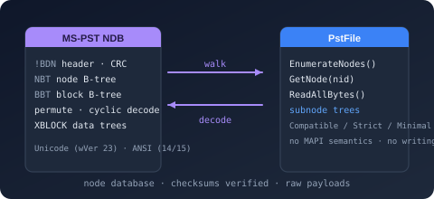

Bodu.IO.Pst

Bodu.IO.Pst is a low-level, read-only container reader for the Outlook personal-folders format (PST / MS-PST, Unicode and ANSI formats). Part of the Binary Formats & I/O topic, it reads the node database (NDB) - the header, the node and block B-trees, block data with the format's permute and cyclic content encodings decoded and checksums verified, multi-block data trees, and per-node subnode trees - and the LTP layer over it: heap-on-node, BTree-on-heap, and per-node property-context and table-context views with wire-typed values. It carries no MAPI semantics and no writing - it is the substrate the Bodu.Formats.Outlook.Pst mail-store reader builds on, the same container/format split as Bodu.IO.Compound beneath Bodu.Formats.Excel.Binary.
A PST file is a node-oriented database in a single file. PstFile opens it as a disposable session; every object the file holds - folders, messages, tables, internal maps - is a PstNode addressed by a 32-bit PstNodeId whose five low bits carry the node's PstNodeType.
| Concept | Type | Role |
|---|---|---|
| File | PstFile | Opens the container, walks the node B-tree, and anchors every read. |
| Node | PstNode | One object: a data payload (assembled transparently from its data tree), a private subnode tree, and the LTP views over its heap. |
| Property context | PstPropertyContext | The node's property bag: 16-bit property identifiers with wire-typed values, resolved on access. |
| Table context | PstTableContext | The node's table: typed columns over identifier-keyed rows, streamed one row block at a time. |
Key concepts
| Concept | Plain-language meaning |
|---|---|
| Node database (NDB) | The bottom layer: nodes and blocks indexed by two B-trees (NBT and BBT), with per-block trailers, checksums, and the optional content encodings. |
| Node identifier (NID) | A 32-bit identifier - five type bits plus a 27-bit index. Well-known anchors: the message store (0x21), the name-to-id map (0x61), and the root folder (0x122). |
| Data tree | A payload larger than one block is stored as an XBLOCK / XXBLOCK tree of data blocks; ReadAllBytes flattens it, OpenDataStream streams it one leaf at a time. |
| Subnode tree | A node's private namespace of child nodes - a message keeps its recipient and attachment tables there. |
| LTP | The middle layer: a heap allocated inside a node's data (heap-on-node), B-trees over that heap, and the property-context (0xBC) and table-context (0x7C) structures built on them. |
| Content encoding | The format's "compressible encryption": a byte permutation or block-keyed cyclic substitution applied to block data, decoded transparently. |
| Validation level | PstValidationLevel - Compatible (default), Strict (every checksum and signature enforced), Minimal. |
For the full glossary, see Core concepts.
Scope and limitations
- Read-only, both PST formats. The post-2003 Unicode format (
wVer23) and the legacy ANSI format (wVer14/15) are read through the same surface; OST files are recognized and rejected with PstUnsupportedFormatException. - No MAPI semantics. Property values surface with their raw wire types; property meaning (subjects, senders, recipients) belongs to the mail-store reader layered on top.
- Bounded memory. Payloads stream through a decoded-block LRU cache sized by BlockCacheSize;
OpenDataStreamkeeps one leaf block resident regardless of the logical payload size.
Worked example - open, enumerate, read
- Probe the input cheaply with
PstFile.IsPstFile(stream). - Open the container:
using PstFile file = PstFile.OpenRead(path). - Enumerate the node directory with
file.EnumerateNodes(), or resolve a well-known node directly. - Read a node's property context or table context, or its raw payload.
using Bodu.IO.Pst;
using PstFile file = PstFile.OpenRead("archive.pst");
Console.WriteLine($"Format: {file.Format}, encoding: {file.CryptMethod}");
PstNode store = file.GetNode(PstNodeId.MessageStore);
foreach (PstPropertyValue value in store.ReadPropertyContext())
Console.WriteLine($"0x{value.PropertyId:X4} (wire 0x{value.WireType:X4}): {value.RawData.Length} bytes");
Common scenarios
| Scenario | Reach for |
|---|---|
| Test whether a file is a PST of any variant | PstFile.IsPstFile(stream) |
| Open a file or stream | PstFile.OpenRead(path) / OpenRead(stream) / Open(stream, options) |
| Enforce every checksum and signature | new PstFileOptions { ValidationLevel = PstValidationLevel.Strict } |
| Tune or disable the decoded-block cache | PstFileOptions.BlockCacheSize (0 disables) |
| Walk the node directory | file.EnumerateNodes() |
| Resolve a node that must exist | file.GetNode(id) (throws PstNodeNotFoundException) |
| Resolve a node that may be absent | file.TryGetNode(id, out node) |
| Read a node's whole payload | node.ReadAllBytes() |
| Stream a large payload | node.OpenDataStream(); node.DataLength prices it first |
| Read a node's property bag | node.ReadPropertyContext() |
| Read a node's table | node.ReadTableContext() → EnumerateRows() / TryGetRow(rowId, out row) |
| Walk a node's private children | node.EnumerateSubnodes() / node.TryGetSubnode(id, out subnode) |
| Classify why a file was rejected | catch (PstFileException ex) → ex.Error |
Headline types - Bodu.IO.Pst
| Type | Purpose |
|---|---|
| PstFile | The disposable read session: OpenRead / Open / IsPstFile, Format / CryptMethod, node enumeration and lookup. |
| PstNode | One node: ReadAllBytes / OpenDataStream / DataLength, subnode access, and the ReadPropertyContext / ReadTableContext LTP views. |
| PstNodeId | The 32-bit identifier - PstNodeType in the five low bits, index above; well-knowns MessageStore / NameToIdMap / RootFolder. |
| PstPropertyContext | The property bag - tag-ordered PstPropertyValue entries with typed accessors, values resolved on access. |
| PstTableContext | The table - PstTableColumn metadata, RowCount, streaming EnumerateRows, keyed TryGetRow. |
| PstFileOptions | Read options - PstValidationLevel and the decoded-block BlockCacheSize. |
| PstFileException | The common base, carrying a PstFileError category; PstFileFormatException, PstUnsupportedFormatException, and PstNodeNotFoundException derive from it. |
The mail-store reader built on this package
Bodu.Formats.Outlook.Pst layers the messaging vocabulary on top: OutlookMailStore opens a .pst as a mail store and exposes the folder hierarchy, messages with decoded MAPI properties, recipients, attachments (including nested embedded messages), store-wide named-property resolution, and the text/HTML/compressed-RTF bodies - sharing the Bodu.Formats.Outlook MAPI value model with the .msg reader.
using Bodu.Formats.Outlook;
using var store = OutlookMailStore.OpenRead("archive.pst");
foreach (OutlookMailFolder folder in store.RootFolder.EnumerateSubfolders())
{
Console.WriteLine(folder.DisplayName);
foreach (OutlookMailMessage message in folder.EnumerateMessages())
Console.WriteLine($" {message.Subject} - {message.SenderName}");
}
Where to go next
- Core concepts - full vocabulary: NDB, NID/BID, data and subnode trees, heap-on-node, property and table contexts.
- Getting started - install + minimal samples for opening, enumerating, and reading.
- API reference - Bodu.IO.Pst · Bodu.Formats.Outlook.
- Binary Formats & I/O topic overview - where the container reader sits beneath the format readers.